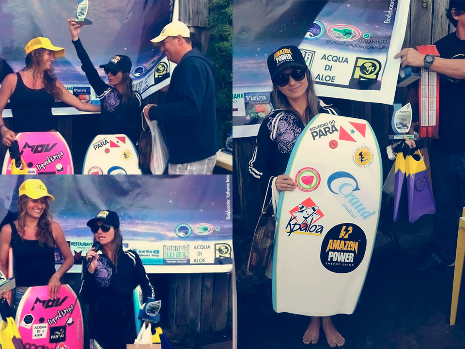

2 min 20 seg de leitura
A paraense Alexandra 'xandinha' Ereiro conquista pódio na categoria profissional na 2º Etapa do Circuito Catarinense de Bodyboard na praia da Armação, no Matadeiro, em Florianópolis SC.
Alexandra além de nunca ter surfado no pico, é a atleta que mora mais longe de Santa Catarina, praticamente do outro lado do país e encarou uma longa viajem para participar desta etapa. Sempre mantendo o foco e com muita raça e disposição conquistou um honroso 4º lugar na categoria profissional do evento, representando com talento e maestria o estado do Pará.
CONFIRA O DEPOIMENTO DA ATLETA COM EXCLUSIVIDADE PARA O SITE CRAUD.NET DEPOIS DA BATERIA FINAL:
Estava bem difícil o mar durante a competição, fiz uma semi-final bem disputada, tive certa dificuldade para chegar na final, as meninas locais surfam demais e as atletas do estado do Paraná também surfam muito, e acham a onda com mais facilidade, pois já estão familiarizadas com o pico.
Estava bem difícil o mar durante a competição, fiz uma semi-final bem disputada, tive certa dificuldade para chegar na final, as meninas locais surfam demais e as atletas do estado do Paraná também surfam muito, e acham a onda com mais facilidade, pois já estão familiarizadas com o pico.
Observei muito as baterias, e só surfei no pico no dia do campeonato mesmo.
Todos os dias fica bem 'crowdeado' de surfistas no mar e aqui existe uma disputa grande pela onda.
Estou muito feliz, consegui uma premiação em dinheiro, foi tudo de bom.
Eu estava em terceiro e faltando três minutos tomei a virada, fiquei depois quase congelando com 13° graus de temperatura da água esperando uma onda boa que não rolou, e infelizmente soou a buzina.
Deus sabe o que faz, meu objetivo agora é ir para Sergipe correr a 4° e última etapa do Circuito Sergipano de Bodyboard e depois volto novamente para Floripa para competir na 3ª etapa do Catarinense e buscar melhorar minha pontuação no ranking- Comentou Alexandra Ereiro.
Meu Podio...! uhu....! rsrs...!
Foi um dia Incrível Ir a lugares e fazer coisas que nunca foram feitas antes - isso e o que significa viver
Resultado final da 2º Etapa do Circuito Catarinense de Bodyboard Cat. PRO FEMININO 1ª Raquel Friedrich SC 2ª Pérola de Souza PR 3ª Naiara Stringhini SC 4ª Alexandra Ereiro PA
Conto com o Co-Patrocínio da Seel. Apoios: Bela Rosa | Kpaloa | Craud.net | Amazon Power | Luxo de Sereia.
Veja Mais. Website: Studio Surf.